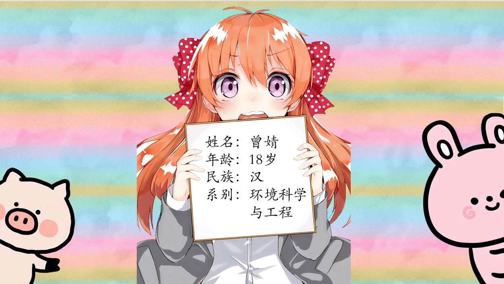
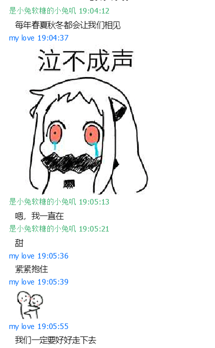

嘿，后来你高考如何？
开场白，故事的开始。
2019-06-18初次见面
曾甜来广州，和她初次相见。 我和曾甜成为恋人。 曾甜 00:14:04 其实我觉得见到你很开心。我突然觉得，命运让我错过他可能就是为了遇见你。我答应了你，我就会负责的。我也不想错过你。既然我答应了和你在一起，我就不会喜欢那个人了，以后我就喜欢你。感觉好沉重的诺言啊，但是我还是要对你负责。 三十 07:45:12 我会一直在。
阅读更多 2019-07-21第一个情头
曾甜 23:02:30 我觉得你不用记住那些具体的东西，记住喜欢我和被我喜欢的感觉就好了
2019-07-22交换心心
三十 18:30:55 只因离开的太早，我一直讲这句话保留在心底 三十 18:31:06 遇见你，真让我着迷 曾甜 18:32:41 Please don't be in love with someone else. 曾甜 18:34:03 请你不要爱上别人 曾甜 18:34:19 不然我都不知道该怎么办了
2019-07-23和曾甜的感动
2019-07-25
和曾甜的感动
my love 23:06:48
现在吧，我对以前的事也不再像以前那么纠结了，就拿那个关注他的人来说吧，以前我因为有人喜欢他就莫名难过，我朋友安慰我说他们没有互关那肯定他不喜欢她啦不要难过啊，可我还是觉得不舒服。现在我不这么想了，甚至有点心疼那个人。欸，对于他吧，我觉得年少的心动只能无疾而终，有些事情就是注定要这样。我以前怨恨遇见他，觉得他的出现把我的人生搞得一团糟。后来结束时还是难过啊，我和我朋友说他没兴趣了，我们再也没有以后了。当时我朋友就安慰我说以后会遇到更好的人。当然以前每次她都这么说，不过那次她说的话还比以前多了几句，她原话是说，没事的以后你一定能遇见更好的人，你相信我，或远或近，说不定就这个暑假，你就会有桃花运的。我当时还不信，这个暑假怎么可能就会有。结果就真的有了诶，我真的觉得有的时候命运好神奇诶。现在我不再怨恨他的出现了，反而觉得很庆幸因为那些事而能遇见你。我对你呢，虽然不是以前那种情窦初开的心动，但是我对你是愿意带着责任去爱你。我真的很认真的在对待你。希望你也是。
 还有好多啊！！！一天内我们聊了好多好多！！！
还有好多啊！！！一天内我们聊了好多好多！！！
和曾甜的矛盾
曾甜不喜欢我中央空调，我要因为她而改变。
2019-07-28和曾甜的感动
曾甜写了80遍我的名字，感动。
2019-07-28和曾甜的感动
曾甜写给我的信，感动。
2019-07-30曾甜偷拍
2019-08-02
哇，我们好幸福
是小兔软糖的小兔叽 22:16:27 你真好 是小兔软糖的小兔叽 22:16:54 我感觉你真的太好了 my love 22:17:41 我要对你非常非常好，为你做所有我想做的事 my love 14:59:23 我希望我们能幸福 my love 14:59:35 我希望我听到的不是，祝你们幸福 my love 14:59:37 而是 my love 14:59:43 哇，你们好幸福啊
2019-08-02极其搞笑的
01年属兔吗？什么竟然你我都觉得毫无违和。
2019-08-08毛笔字
曾甜写的字
2019-08-09吵架
因为备注，分组，不够喜欢曾甜。吵架。 记录大事件开始
2019-08-11/2019-08-12曾甜第一次给我发照片
哇哇哇，太开心了！
2019-08-16很严重的吵架
继上一次以及前面的矛盾，和我们大闹。差点分手。好在我们化解了，并更加爱对方。曾甜还说来姨妈了，抱住她。 我们和解后说的话 是小兔软糖的小兔叽 22:38:41 我很想抱你的当时 是小兔软糖的小兔叽 22:39:01 我害怕你嫌我冲动 my love 22:47:08 我当时和你待在一起唯一内心被触动的一刻就是，你说你要哭出来，我看着你的眼睛的那一刻。也正是那一刻我才决定要和你在一起。 my love 22:49:02 当时我想，啊，我竟然能把这个男生弄哭，就是他了，我要好好对他，他应该值得这一切的。我当时是这么想的
2019-08-17/2019-08-18我们第一次设置聊天背景

军训
曾甜说肚子疼，以为是吃错东西，结果是姨妈，抱抱我的甜，给你捂肚子 。
2019-09-11中秋南昌见面
我和曾甜感情升温的重要经历。 第一次牵手 第一次抱你 第一次接吻 第一次挠痒痒 第一次亲密接触 第一次交换衣服 曾甜给我初恋的感觉，她好可爱
阅读更多 2019-09-13/2019-09-16曾甜疯狂迷恋小兔子
全部都是小兔子
曾甜升级的前兆，真的超级可爱。
 Vector 20:34:07
收收收！你不能这么优秀，给别人一点生存空间
Vector 20:34:12
大笑
my love 20:34:25
大笑大笑大笑
my love 20:34:58
我好喜欢你
my love 20:35:10
我最喜欢你
Vector 20:35:52
我也喜欢你
Vector 20:34:07
收收收！你不能这么优秀，给别人一点生存空间
Vector 20:34:12
大笑
my love 20:34:25
大笑大笑大笑
my love 20:34:58
我好喜欢你
my love 20:35:10
我最喜欢你
Vector 20:35:52
我也喜欢你
曾甜的计算机课超级水
我协助曾甜完成计算机基础题目
2019-09-20小吵架
我亲爱的甜，真抱歉让你伤心。
2019-09-23帮助曾甜完成实验室自我介绍PPT
虽然昨天我们吵架了，但是今天我们都很愉快的一起把PPT完成了。超级开心。 
2019-09-24同步生活的制定
2019-09-25
同步生活的制定
曾甜的彩虹车。
2019-09-25送曾甜的“筷”乐笔
和曾甜一起制作的自我介绍PPT，在实验室自我介绍中使曾甜大放异彩！超级开心。 换情侣网名： 是小兔叽的小兔软糖 是小兔软糖的小兔叽
2019-09-27吃零食的吵架愈发可爱
和曾甜在一起，连矛盾都变得可爱起来。
2019-09-28究极大矛盾
风雨历程少不了矛盾，更多的是相互爱慕与扶持，使得我与曾甜越发坚定。 曾甜叫我老公啦。我亲爱的甜，好喜欢你。
2019-10-01/2019-10-7见甜春夏秋冬

2019-10-09终身大事
和曾甜谈了很多有关与我们各自的家，各自对事物的看法，各自的为人，很多很多。对曾甜的喜欢日益源自于对她的欣赏。
2019-10-10/2019-10-15曾甜给我甜甜的帮助
7800
2019-10-20和曾甜第一次视频
超级开心。
2019-11-03发现了双方内心的小秘密
项圈手铐还有脚铐哇
2019-12-14